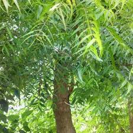
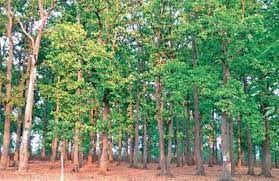
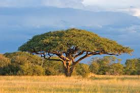

Raniganj Coal Mine
Native Species Recommendations
  Native species like Neem (Azadirachta indica), Sal (Shorea robusta), and Acacia (Acacia nilotica) are ideal for enhancing carbon sequestration and improving soil quality in the Raniganj wasteland.
Drought-Resistant Species
For areas prone to drought, species such as Bamboo, Jatropha, and Prosopis juliflora are recommended due to their resilience and fast-growing nature.
Ideal Planting Density
An optimal planting density of 70-80% coverage will ensure better carbon absorption and improve ecological balance.
The estimated cost of plantation and land preparation is ₹1.5-2.0 lakh per hectare, which includes procurement of seedlings, irrigation systems, and labor.
| Soil Type | Soil pH Level | Soil Fertility |
|---|---|---|
| Loamy | 6.0 - 7.0 | High in organic matter |
| Temperature | Precipitation | Humidity |
|---|---|---|
| 25°C - 35°C | 1200 mm/year | 60% |
By analyzing various parameters like soil type, climatic conditions, and species selection, we can effectively estimate the carbon sink potential of the plantation over the next 10 years.
Annual Carbon Emission: The current carbon emissions in the Raniganj area are approximately 22.62% per year.
With the recommended plantation of native and drought-resistant species, it is projected that carbon footprints could be reduced by 30% within 5 years.
Analyse Carbon Emission - Carbon Sink Gap